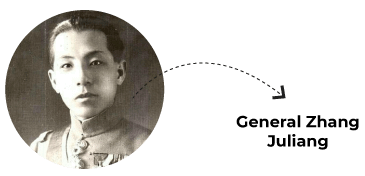

The origins of democratic Taiwan
Here’s a look at the unwitting turn of events that led to China being ruled by Communists that had led to the turn of events to where we are today in a potential threat of forceful occupation of the self-governed island nation
29 August, 2022
A secret mission of American operatives formed a partnership with communist army of Matsitung. The United States unwittingly played a role in China's conversion to communism.
Chairman Mao zedong created people's republic in 1949 and since then the tensions between China and West have remained volatile
When world war ii broke out chinese forces under Chiang Kai-shek received the goodwill and financial support of allies
Japanese invasion of Manchuria was considered the first act of second world war in 1931 8 yrs before war broke out in Europe
When the Japanese started invading China the people wanted both factions to fight as one group but Jiang Kai-shek was against it as he considered Matsitung and his cause a bigger threat.
When the Japanese threatened to occupy northern China, Jiang focused his army on the communists instead. General Zhang Juliang (The young marshal) was ordered to surround Mao's Strong hold in the city of yemen. Instead the marshal contacted the communist headquarters in the ancient city of xi'an.
The Marshall placed Jiang under house arrest when he arrived pending a decision by the communist leader on whether to exile or execute him
Jiang kai shek was given little choice in combining forces with Mao's communist army to fight against the invading Japanese
Within 6 months of this new alliance Japanese Invasion began
By the end of 1937 Japan considered China a conquered nation. Shanghai, Peking and Canton had all fallen. One corner of Shanghai remained untouched because there were European and United States settlements with status of colonies called Island Shanghai (1937 to 1941). Run by British, French, Japanese and Chinese in their individual portions.

Head of Jiang's Intelligence Network was an elusive figure of brutal reputation called Dai Li. He headed a department of statistics and investigation. He is supposed to have an intelligence force of 100,000 to 300,000 agents.
This intelligence force had cracked the japanese code twice and had warned USA of an impending attack on Pearl Harbour which the war department Ignored. With this attack USA entered the Second World War. USA, now a partner of China, only recognised the government of Jiang Kai-Shek. It supported China with Weapons and equipment to make sure that Chinese remained at war with the Japanese and kept them busy.